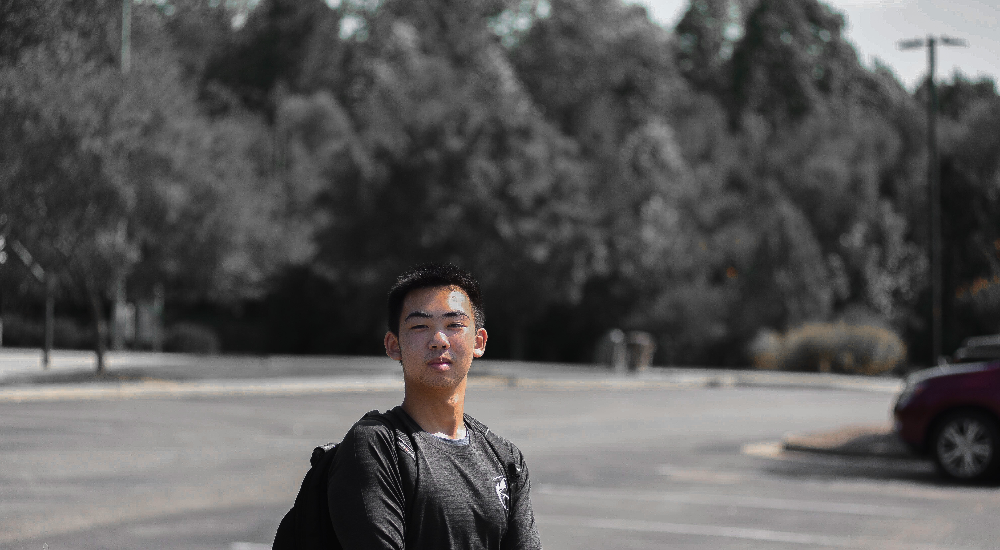

Alex Ke
My name is Alex Ke and I am currently a senior at Panther Creek High School. I got into photography with my dad's camera (Nikon D750, 80-200 2.8 lens) in 2015 during my freshman year. I started out with landscapes mostly but eventually got into portrait photography. I feel like it captures more emotion. Outside of photography I enjoy lifting and hanging out with my friends and I am looking forward to more shoots in the future.